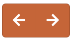
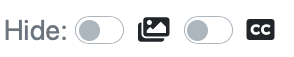
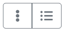

Using the Parasites Atlas
The Parasites Atlas consist of a collection of unique cards - one for each parasite Family/Genus associated with a specific host The cards can be accessed using the three dropdown menus on the top toolbar.
Initially the cards are divided into 8 cardsets by definitive host:
Ruminants, Horses, Carnivores, Pigs, Hares, Rodents, Poultry, Ectoparasites (Non-host specific)
These are the first 8 choices on the leftmost dropdown menu. A parasite family/genus may occur more than once across these 8 cardsets, but only once within a cardset. The middle menu groups the cards by parasite type.
The cards have then been re-grouped in 3 further cardsets, by parasite rather than host, as the next 3 options on the leftmost dropdown menu:
Helminths (all hosts), Protozoa (all hosts), Ectoparasites (all hosts)
A parasite family/genus may occure more than once within these cardsets as each card is still host-specific. The middle menu groups the cards by various criteria.
Finally, a special Picture Quiz cardset to test image recognition has been created.

Click the arrows (or tap keyboard arrows) to show the previous / next card - the position will across "chapters" (middle menu).
Tap the hide button to hide the rightmost menu when testing.
Click the book button to show the Cards Index. Select to list cards by Family/Genus or by Species. Click an entry to show the card.
Several Species entries may direct to the same card. Use the browser's inbuilt search (usually cmd-F) to find entries on the page.
Click to reveal a dropdown menu - select an option to open a new browser window/tab with pictures and captions.
Use the browser's inbuilt search (usually cmd-F) to find pictures on the page.
The pictures match the Picture Quiz chapters plus one with all images in the Parasites Atlas.
The cards are grouped according to the original 8 cardsets.
Use slider to distribute width between images and text panels. Slide to far right to show only images.
Click on an image to zoom it full screen. Click on the left / right edges to move to previous / next image.
Click to return to card.

Use the switches to have the images or the captions (CC) initially hidden when the card loads. Toggling a switch has the immediate effect on displayed card.
Initially hiding the captions is important when testing - to reveal a caption click the grey caption bar.
To reveal or hide all the images click .
Use the switch to have the text entries initially hidden when the card loads. Toggling the switch has the immediate effect on displayed card.
Initially hiding the text is important when testing - to reveal/hide a single row click the label for that row.
To reveal or hide all the text click .
Testing Image Recognition with Picture Quiz
Selecting the Picture Quiz cardset has several side effects. The rightmost menu now only displays "Image 1" etc. (Click the hide button to hide even that). The middle dropdown menu offers groups of images to test. The text area remains the same but only one picture per card is displayed. The purpose is to progress through the images in a chapter testing recognition. Use the switches to initially hide image captions and card text, or the slider to remove the text.
The button appears when Picture Quiz is selected. Tap to reveal an uncluttered screen with just images and captions.
Use these buttons to categorise a card as:
Untested -- Incorrectly Identified -- Correctly Identified -- Favourite.
The catogorisations are remembered by the browser. Use the dropdown to reset categorisations back to Untested.
These catogorisations can be used to include/exclude cards from testing (see Randomise below).
Untested -- Incorrectly Identified -- Correctly Identified -- Favourite.
The catogorisations are remembered by the browser. Use the dropdown to reset categorisations back to Untested.
These catogorisations can be used to include/exclude cards from testing (see Randomise below).
Set the switch ON to initially hide image captions.
Click Randomise to create a random list of images in this chapter -- the number remaining untested (including the displayed image) is shown on the right. Use the switches to include (switch on) or exclude (switch off) cards with the relevant category. If you change the switches tap Randomise again.
Identify the first image, tap the grey caption bar to reveal the answer, tap a category button to record. Then tap to move to the next image on the list - the numbers remaining count down. When the last image is viewed the system automatically re-randomises the list and starts again.
Click Randomise to create a random list of images in this chapter -- the number remaining untested (including the displayed image) is shown on the right. Use the switches to include (switch on) or exclude (switch off) cards with the relevant category. If you change the switches tap Randomise again.
Identify the first image, tap the grey caption bar to reveal the answer, tap a category button to record. Then tap to move to the next image on the list - the numbers remaining count down. When the last image is viewed the system automatically re-randomises the list and starts again.